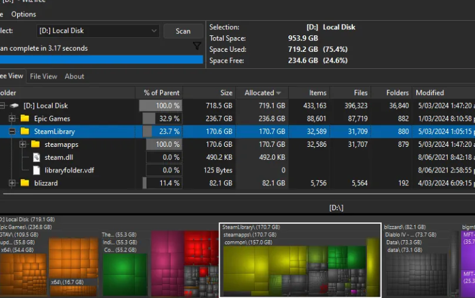

WizTreeは、パソコンのストレージ使用状況を高速で分析できる無料ソフトです。 どのフォルダやファイルが容量を多く使用しているのかを視覚的に確認できるため、 容量不足の原因を簡単に見つけることができます。 Windowsユーザーに人気のディスク容量分析ツールです。

公式サイトから無料でダウンロードできます。
★★★★★
パソコンの容量不足を解消したい人におすすめのソフトです。 スキャンが非常に速く、どのフォルダやファイルが容量を使っているのか一目で分かります。 不要なデータ整理にも役立つため、Windowsユーザーなら一度は試してみたい便利なアプリです。
更新日：2026-06-27